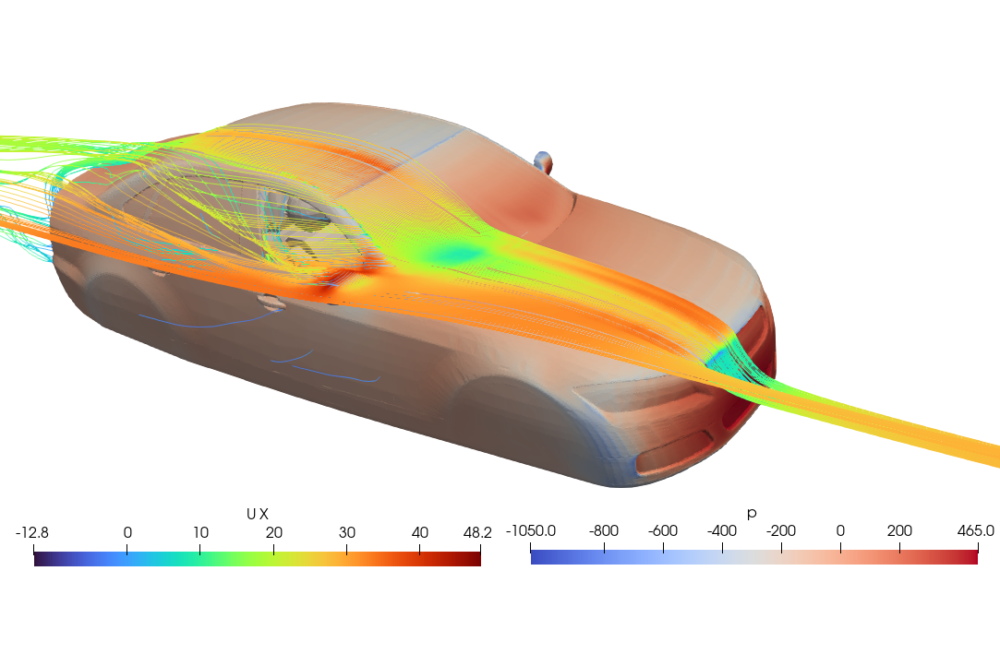

Fun CFD Simulations
Here is a collection of some fun CFD simulations done during my free time to better understand fluid dynamics and OpenFOAM. Due to limited compute resources, the meshes are fairly coarse; however, the simulations still provide some valuable insights.
Adjoint optimization of car side mirror
[Under Construction: 6/4/2024] Coming from a fluid mechanics background, I really enjoy observing smooth surfaces and flow control devices. Unfortunately, during college, optimization was not taught, and I had no experience with the numerical method. The adjoint method coupled with dynamic meshing is interesting, and after testing a couple tutorials and reading a couple guides, I created a case file where I hope to optimize the side mirrors of the DrivAer car. More updates on this project as I obtain more concrete solutions.
Aerodynamic penalty of opening my car window

[Under Construction: 6/4/2024] After a long day of research in the lab, the last thing I want is to spend my commute back home sitting in my hot car. It’s well known that opening the window during the first couple of minutes is beneficial for cooling the car; however, I've always been interested in how much this affects the aerodynamics of the vehicle. In this simulation, I modified the DrivAer car model and created a basic interior to simulate the effects of opening the front windows of the car. Surprisingly, after normalizing with the frontal area, it seems like the drag penalty is fairly small. A full case file will be available soon.
Compartment Fire
[Under Construction: 6/4/2024] It's still a work in progress, but I've always thought fire was fascinating. However, it's tough to find guides and textbooks that focus on the computational component without delving too deep into chemistry. This is the first simulation of heptane combustion from a ground-level intake. As the gas burns, it generates heat and raises the room's temperature. The image also shows CO2 contours, and it's interesting to observe how the gas spreads throughout the compartment. More updates on this project as I learn more about combustion and flame modeling.
Stirring my morning coffee
A fun CFD simulation where OpenFOAM's sixDoFRigidBodyMotion solver is used to stir some coffee and milk together. To simulate the two-phase flow, interMixingFoam is utilized. The coffee and milk are miscible, while the air interface is immiscible. The case file was modified from Nicolas Badano.
Wind Around Kuala Lumpur
A fun CFD project in which I simulated the wind around my capital city, Kuala Lumpur. A RANS solver is utilized, and the geometry considered was about 1km by 1km. The Petronas Twins Towers are visualized, and the results indicate that on some roads, there are some high wind loads to pedestrians, as evident by streamlines with high velocity magnitudes. The mesh is fairly coarse, and the boundary layers are not well resolved due to the differences in building size; however, the simulation provides a high-level overview for pedistrian comfort!
External Aerodynamics of a Cessna 172 aircraft

A fun CFD project in which the flow field around the world's most produced aircraft is simulated using a RANS solver. The k-ε model is utilized, and the y+ is between 100 and 500. The aircraft is cruising at 122 knots, with an ambient air temperature of 20 degrees Celsius. The mesh is fairly coarse; however, the lift and drag forces are reasonable.
Stirring my morning coffee
A fun CFD simulation where OpenFOAM's sixDoFRigidBodyMotion solver is used to stir some coffee and milk together. To simulate the two-phase flow, interMixingFoam is utilized. The coffee and milk are miscible, while the air interface is immiscible. The case file was modified from Nicolas Badano.